How the hunt works
Told with M101, the Pinwheel Galaxy, photographed on the night of May 11, 2026.
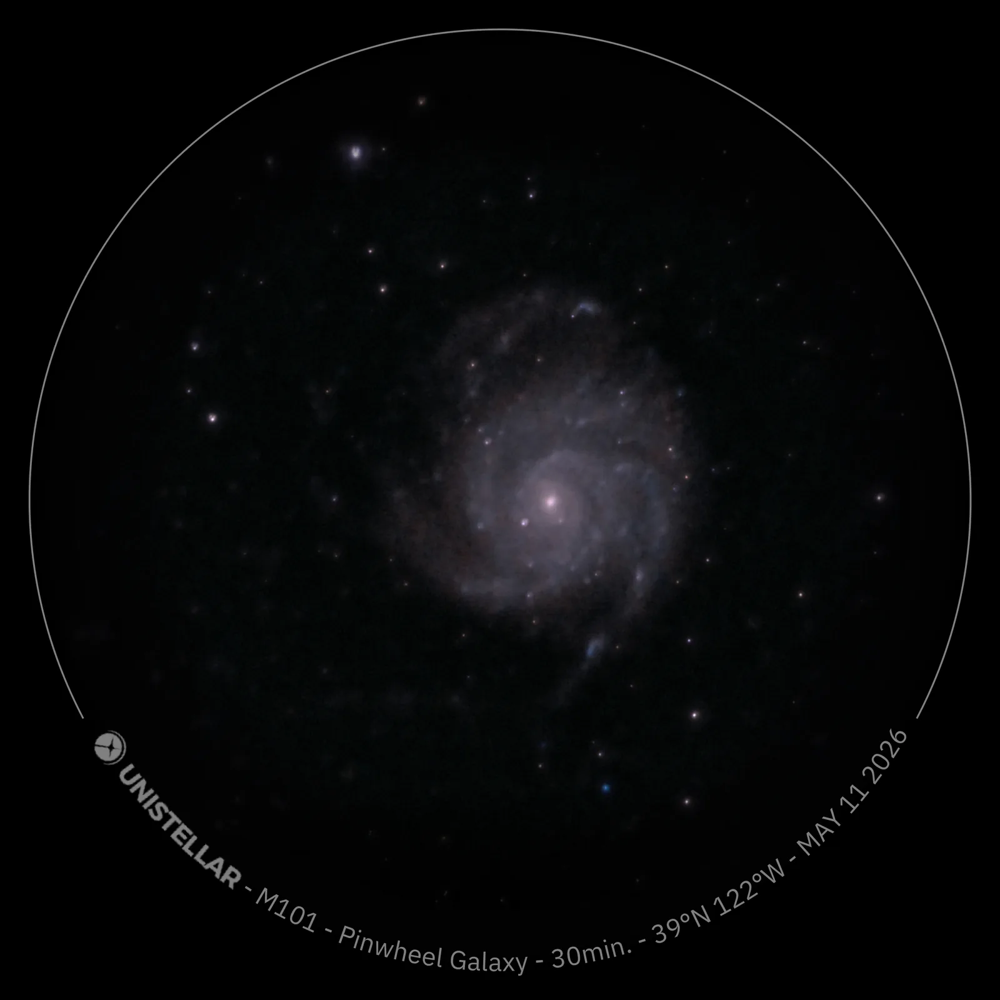
IThe night’s image
The eVscope 2 stacks short exposures as it tracks. After thirty minutes, the Pinwheel is there in the round view the telescope delivers.
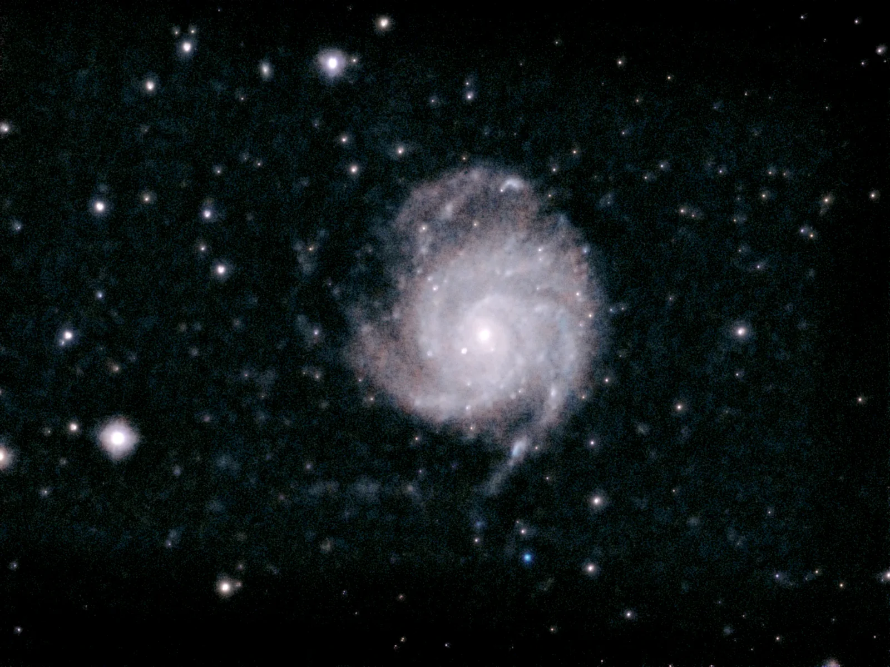
IIThe full frame, brightened
The rectangular frame holds more sky than the circle. Stretching its brightness brings out the faint stars, which is where a new one would hide.
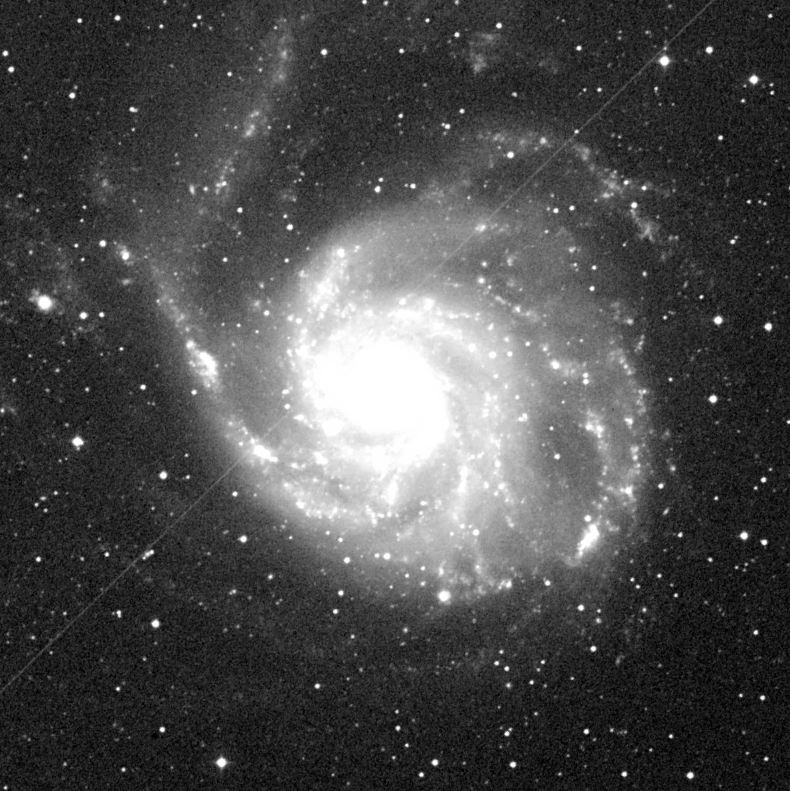
IIIThe professional survey
The Digitized Sky Survey photographed the whole sky from Palomar and Siding Spring on glass plates. Its image of the same field is the standard of comparison.
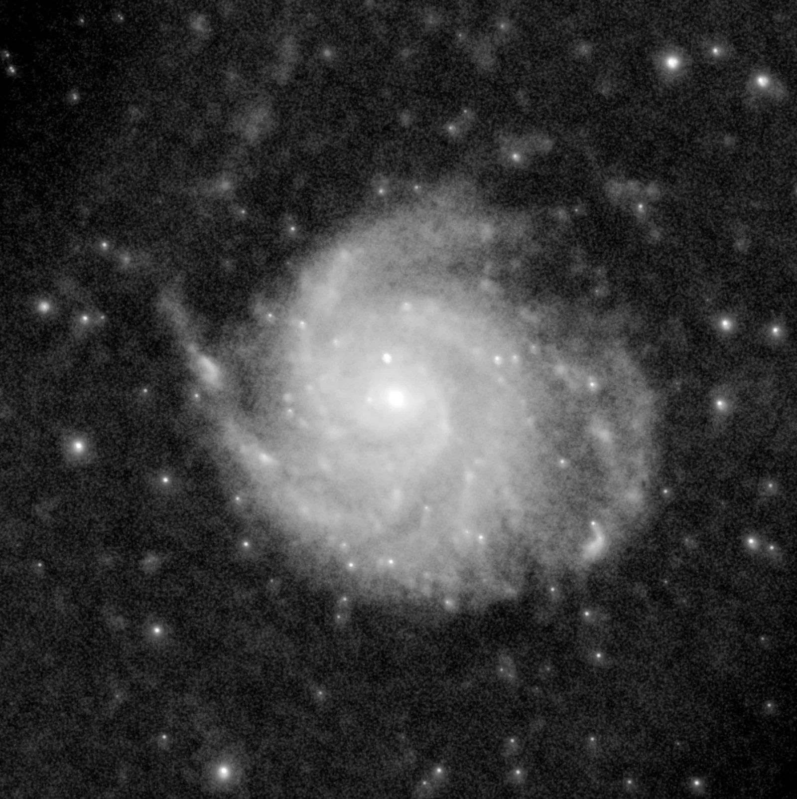
IVThe blink
My frame is turned and scaled until its stars sit exactly on the survey’s. Then the two are flicked back and forth. A star that appears in only one of them jumps out.
Try it yourself. Drag the slider, or press Blink:
The survey goes deeper than my telescope, so it shows many faint stars that my frame does not. That is expected. What matters is the other direction: every star in my frame should also be in the survey. A star that appears only in my frame is a candidate.
For this page, the comparison was done by a program as well as by eye. It found each star in my frame, matched it to the survey, and listed anything left over. Every leftover was then checked by hand.
The galaxies
Each galaxy has its own page, with the night’s image, the blink comparison, and the verdict.
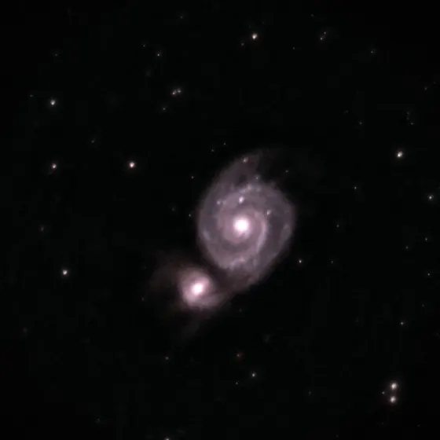
M51
No new star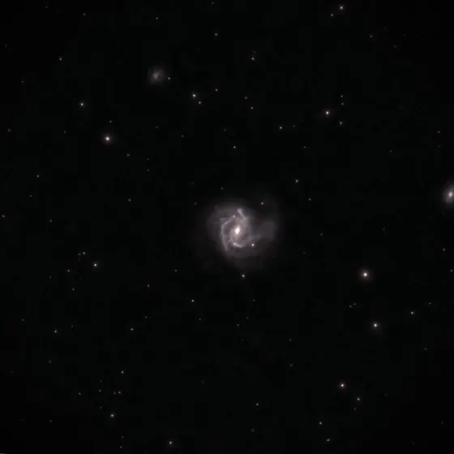
M61
No new star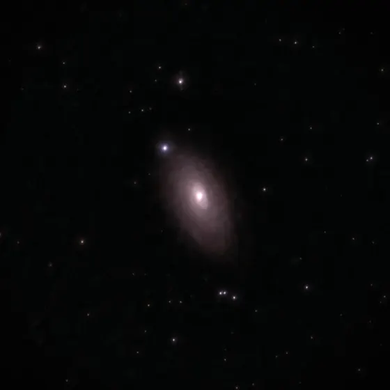
M63
No new star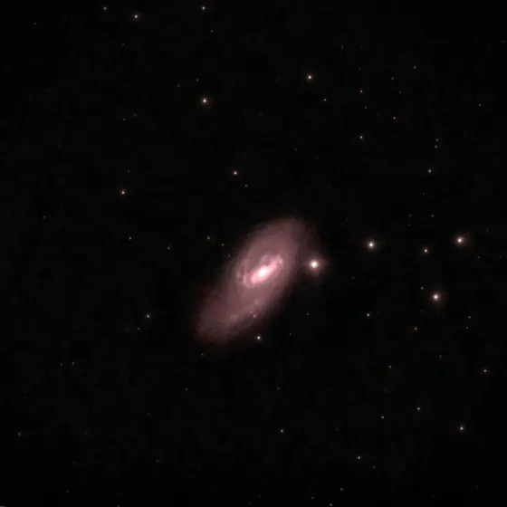
M66
No new star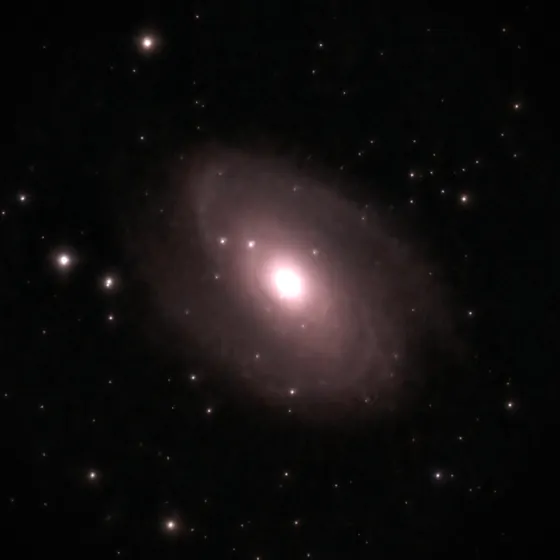
M81
No new star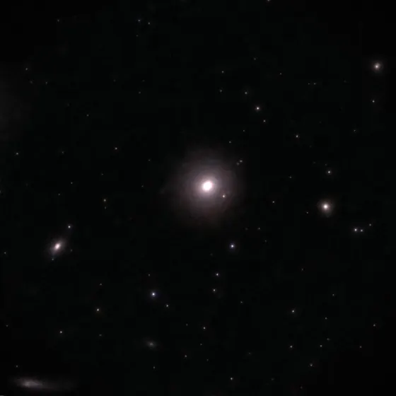
M84
No new star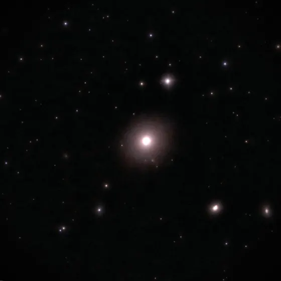
M87
No new star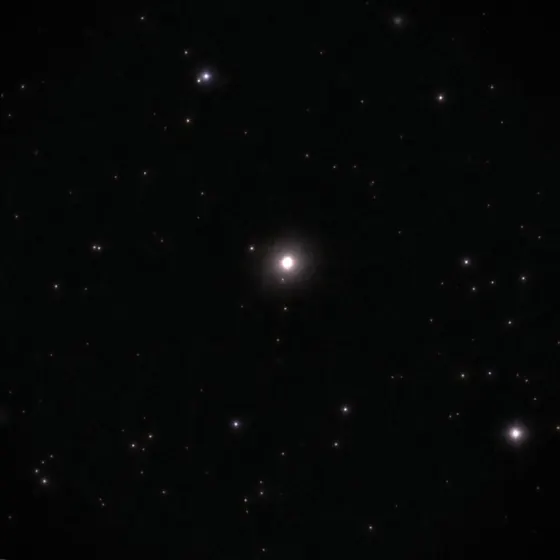
M89
No new star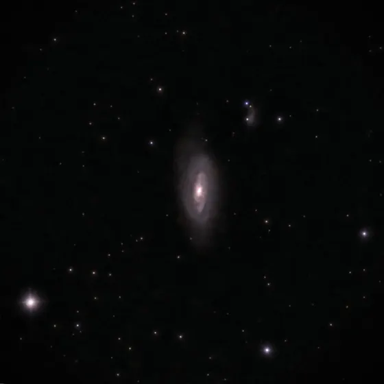
M90
See note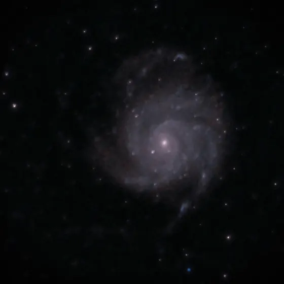
M101
No new star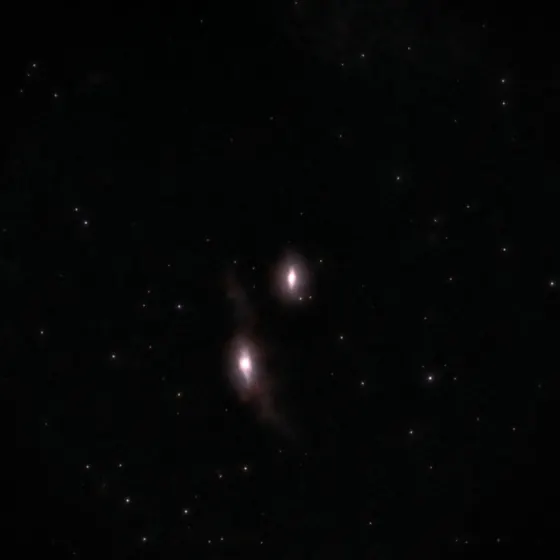
NGC 4435
No new star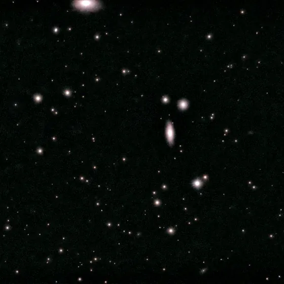
NGC 4461
See note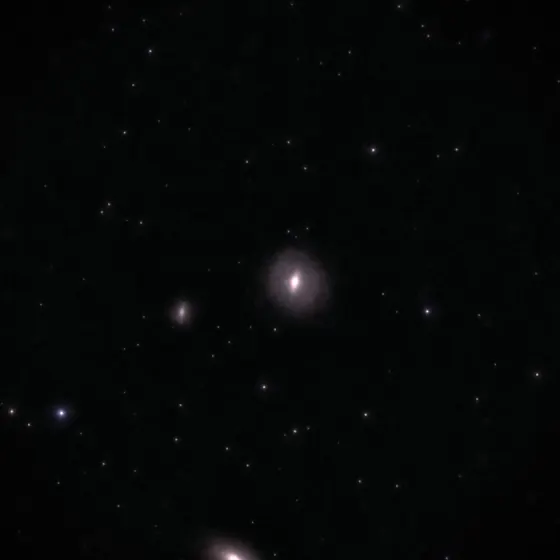
NGC 4477
No new starM83
Survey reference only. M83 sits low in the south from Sacramento, and it is waiting for a clear night of its own.
Awaiting a nightSurvey images: Digitized Sky Survey (DSS2 Red), Space Telescope Science Institute / NASA, from the Palomar Oschin and UK Schmidt telescopes; displayed through the CDS Aladin HiPS service. Telescope images © 2026 Marcus Alden Meredith, taken with a Unistellar eVscope 2.